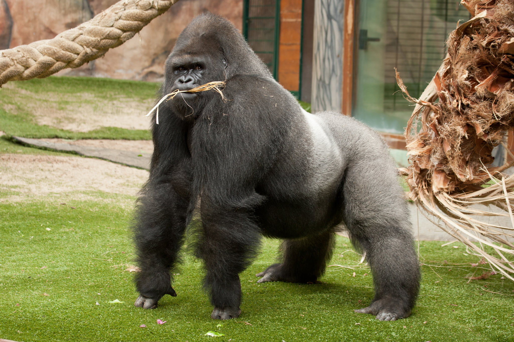

Gorilla
- Gorillas are among the largest and most powerful primates. Adult males, known as silverbacks, can weigh between 300 and 500 pounds (136 to 227 kilograms) and stand up to 6 feet (1.8 meters) tall when upright.
- Gorillas live in stable family groups led by a dominant silverback male. These groups, called troops, also consist of adult females and their offspring. Silverbacks protect their groups and play a crucial role in maintaining social order.
- Gorillas are herbivores, primarily feeding on plants, leaves, stems, fruits, and bamboo shoots. They have specialized dentition and digestive systems adapted to a vegetarian diet.
- All gorilla species and subspecies are listed as endangered or critically endangered due to habitat loss, poaching, and disease. Conservation efforts, including the protection of their natural habitats and anti-poaching initiatives, are essential for their survival.
- Gorillas communicate with each other through a variety of vocalizations, body language, and facial expressions. They can display signs of affection, such as hugging and grooming, and use vocalizations to signal their intentions or emotions.
DID YOU KNOW?
WHERE YOU WILL FIND THEM?
You will find the gorillas at pen W5, next to the monkeys, on the west side of the zoo.